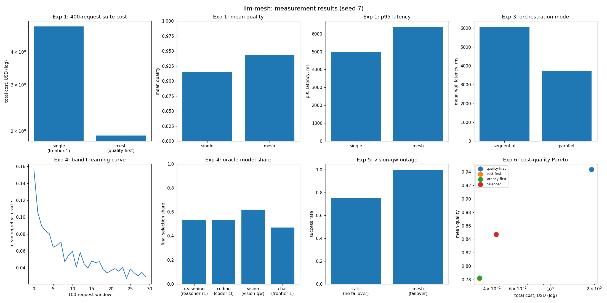

Many specialized models, one routing layer: route, orchestrate, aggregate
One frontier model for every request is the most expensive way to serve mixed workloads: you pay frontier prices for chit-chat, wait on a reasoning model's latency for a simple summary, and you inherit a single vendor's outage as your own. In practice, different models are best at different tasks, but there was no small reproducible harness that quantifies what a mesh buys you: how much cost routing saves, what parallel fan-out is worth, whether a router can learn the mapping on its own, and what happens when a specialist goes down mid-shift.
Mesh discussions are usually architectural diagrams: boxes labeled "router" and "orchestrator" with no numbers attached. The questions that decide whether a mesh is worth building — quality vs cost vs latency tradeoffs per routing policy, the learning curve of an adaptive router, the blast radius of a model outage with and without failover — were argued qualitatively. llm-mesh simulates five specialized models with analytical quality/latency/cost profiles and measures the mesh machinery against a single-model baseline on identical seeded workloads.
src/llm_inference_engine/llm_mesh/ implements the mesh components:
models.py) — five simulated specialists (frontier-1, reasoner-r1, coder-cl, vision-qw, general-8b), each with per-task quality means, per-token latency, and per-token price. Calls are sampled with seeded noise; no real LLM is invoked.router.py) — TF-IDF + class-centroid (Rocchio) classifier mapping raw queries to reasoning / coding / vision / chat, plus four routing policies: quality-first, cost-first, latency-first, balanced.orchestrator.py) — decomposes a request into typed subtasks, dispatches sequentially or in parallel (wall-clock modeled as max latency + aggregation overhead), aggregates results, and fails over to the next-best model on ModelDown. Tool agents (e.g. a fraud-DB check) are simulated as fixed-latency stages.bandit.py) — one UCB1 bandit per task type learning the best model from scored outcomes, plus a DynamicSelector that scores models from rolling observed quality/cost/latency means.observability.py) — append-only Trace of every invocation: routing decision, model, latency, tokens, cost, quality, failover provenance.workflows.py) — the two canonical pipelines from the concept: fraud-risk insurance claims (vision extract -> reasoning -> tool DB check -> summary) and chart+report explanation (parallel vision + chat fan-out, reasoning combine).| 400 mixed requests | Mean quality | Total cost | p95 latency |
|---|---|---|---|
| frontier-1 only | 0.9150 | $5.00 | 4956 ms |
| mesh (quality-first) | 0.9430 | $1.92 | 6395 ms |
| Routing policy | Quality | Cost |
|---|---|---|
| quality-first | 0.944 | $1.92 |
| balanced | 0.847 | $0.43 |
| latency-first | 0.783 | $0.33 |
| cost-first | 0.782 | $0.33 |
Seed 7, 3 runs byte-identical. Semantic router: 1.0000 accuracy on 24 held-out queries. Parallel orchestration: 1.64x speedup (p95 6947 ms → 4486 ms). UCB1 regret 0.1566 → 0.0296 over 3000 requests. Failover: 1.000 vs 0.750 success when vision-qw goes down. The quality win is honest about its price: mesh p95 latency is higher because quality-first routes reasoning to the slowest specialist — the routing policy chooses which axis you optimize.

experiments/run_experiments.py — re-running reproduces these exactly.src/llm_inference_engine/llm_mesh/
models.py # registry of 5 specialists: quality/latency/price profiles
router.py # TF-IDF semantic router + 4 routing policies
orchestrator.py # decomposition, parallel dispatch, failover
bandit.py # UCB1 self-improving router
observability.py # per-request traces: latency, tokens, cost
workflows.py # fraud-claim + chart+report pipelines
10-llm-mesh/
experiments/run_experiments.py # 6 experiments, seeded (seed 7)
results/ # results.md + charts.png (generated)
Full source, tests, and experiment code: 10-llm-mesh/ ·
Run: cd 10-llm-mesh && python3 experiments/run_experiments.py